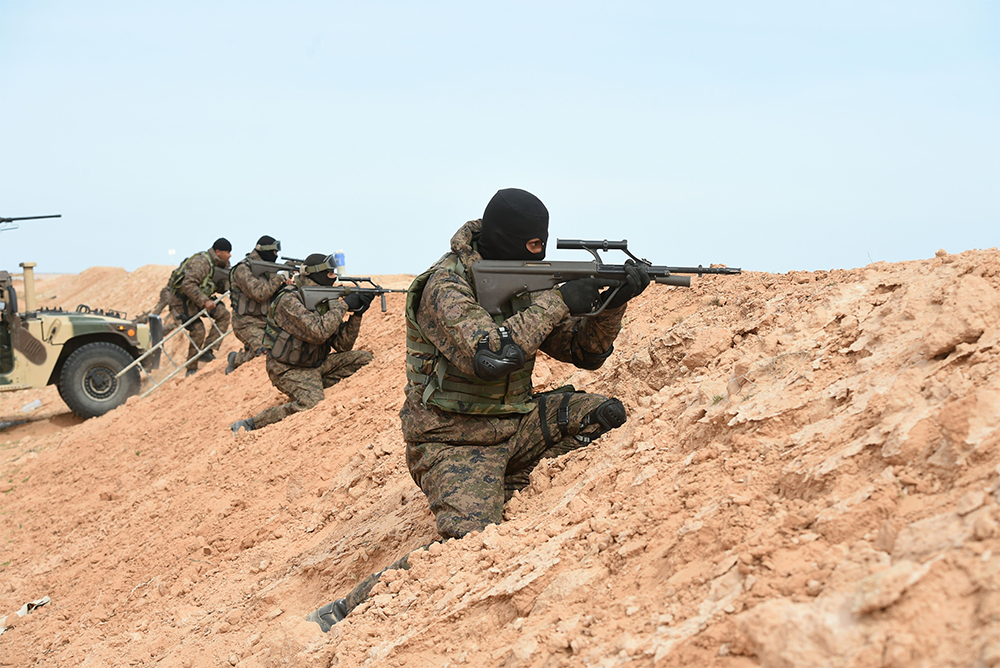

Tunisia continues fighting terrorism and radicalism on multiple fronts. The government faces a daunting challenge in adapting its counterterrorism strategy to an evolving array of threats. Its efforts have focused primarily on counterterrorism and border security measures, but judicial, socioeconomic, and religious policies also play vital roles. The country’s ongoing transition to representative government has often complicated efforts to develop and implement a coherent, effective strategy against radicalism. Bureaucratic, budgetary, and institutional dynamics impose their own pressures and constraints. Tunisia’s challenge is to find the right balance between “hard” and “soft” tools of combating radicalism without pursuing policies that end up fueling extremism rather than diminishing it.
Counterterrorism and Homeland Security
Since 2014, successive Tunisian governments have worked to reorient the country’s security forces to fighting a new array of terrorism threats. The armed forces—overseen by a civilian minister of defense and the Ministry of Interior, which includes the police, internal intelligence, and the National Guard—all share responsibility for fighting terrorism. Cooperation with regional and international partners has increased, and new equipment and training for various units have improved overall capabilities. Tunisian security forces have achieved important successes in recent counterrorism operations, including by arresting and killing wanted militants and by thwarting numerous planned attacks. Security forces demonstrated increasingly sophisticated capabilities in a March 2015 ambush operation which killed nine suspected members of the Okba ibn Nafaa Brigade, including Khaled Chaieb, a veteran jihadi-salafi commander, and in May 2016 killed Seifeddine al-Jammali, a senior commander of an ISG-affiliated group. Tunisian authorities foiled planned terrorist attacks in Bizerte in July 2015 and in Sousse in November 2015, and have seized numerous arms caches in counterrorism raids. Still, formidable challenges remain. The difficulties of sharing information across Tunisian institutions, intelligence shortcomings, and border monitoring, all hinder Tunisia’s response to radical violence.
Most importantly, there is a pressing need for a more comprehensive counterterrorism strategy that can overcome institutional rivalries and gaps in responsibility. Competition and lack of close cooperation between the armed forces, which are charged with border security, and the Ministry of Interior, which is responsible for homeland security, have impeded communication and intelligence sharing. No strong system exists for information sharing between police and military: a fusion center established with foreign assistance does not function efficiently. Despite the introduction of some mixed patrols in border areas, cooperation is weakest in the crucial areas of monitoring returning fighters, many of whom may cross the border from Libya undetected. Meanwhile, widespread petty corruption undercuts control at border crossings where the customs authority has jurisdiction. At multiple levels, broader security sector reform will remain an ongoing challenge for Tunisia.
Legal-Judicial Battles
As security operations intensify and arrests multiply, Tunisian authorities are at pains to develop effective legal mechanisms to counter terrorism that balance the demands of the Tunisian public for greater transparency and accountability with security. In July 2015, Tunisia’s Parliament passed a counterterrorism law with a strong majority—only 10 abstentions and no dissenting votes—that has drawn criticism on procedural as well as on human rights grounds.
The law, which amends Tunisia's 2003 counterterrorism law, hinges on a sweepingly broad definition of terrorism and extends pretrial detention periods. The result has been to aggravate the already overcrowded state of Tunisian prisons and to burden the judicial system with a backlog of court cases. For those detained, even for a short period with no charges, entering the system means being saddled with a police record that can dim future employment prospects. Paradoxically, police detention may also expose youth to jihadi-salafists within prisons at a time of heightened psychological vulnerability.
Despite a spike in arrests, the difficulty of collecting evidence linking suspects to terrorism and prosecuting suspected terrorists and returning foreign fighters means that few terror suspects are put on trial, and court cases result in few convictions. Data from 2015 (January to November), show that authorities made 2,934 terrorism-related arrests leading to 1,697 investigations. Roughly half of those arrested were released for lack of evidence, although they were processed through the criminal justice system. According to the president of the Association of Judges, only eight judges were charged with handling the 1,697 cases opened, making for an average caseload of 210 cases per judge. By December 2015, the courts had handed down a total of 28 sentences.
The Ideological Struggle
Tunisia’s government recognizes the need to fight the ideological and religious factors associated with radicalism and jihadi-salafism. However, the state's approach has changed with each successive administration. Government efforts rest on two main components: one ideological and the other bureaucratic. The government's ideological efforts promote a state-sanctioned tradition of Islamic practice and thought to counter puritanical salafi teachings. The government also works to assert physical control over public religious space by registering and monitoring religious institutions and workers, including preachers.

The Ennahda-led Troika government had a clear strategy to revitalize Tunisia’s historic seat of Islamic learning, the Zaytouna University, as a way to revive a traditional Tunisian Islamic identity that in theory could counter violent Islamic interpretations. However, successive governments, committed to Tunisia’s secular legacy, are reluctant to strengthen once-powerful Islamic institutions and prefer tighter bureaucratic control of prayer, preaching, and teaching.
The challenge for Tunisia, which is not unique among states with Arab and Muslim populations, is to find a balance that provides young people with meaningful and appealing Islamic teaching and experiences with state oversight. The desire for more active, fulfilling religious engagement cuts across broad segments of Tunisian society. Religious preaching and activism flourished in Tunisia after the revolution, highlighting the scale of demand for religious expression.
The challenge for Tunisia, which is not unique among states with Arab and Muslim populations, is to find a balance that provides young people with meaningful and appealing Islamic teaching and experiences with state oversight.
Questions about the practice of Islam and what role it will play in Tunisians’ lives continue to animate debates that shape young people’s worldviews. In this market of ideas, what the state offers must be able to combat the draw of radical Islamic interpretations, which provide simplistic, accessible answers to many questions facing young people.
The ideological battle against radicalism is a generational one, and serious hurdles remain. The legacy of a half-century of state-imposed secularism haunts efforts to imbue the state-aligned religious establishment with the credibility to sway ideological debates. Meanwhile, the government has not come to terms with the fact that conservative interpretations of Islam, including salafism, are an increasingly salient factor in the lives of key segments of Tunisia’s population, including poor urban youth.
Building Socioeconomic Justice
Every Tunisian government since 2011 has struggled to address the socioeconomic factors that drive discontent and radicalization. The relationship between socioeconomic status and radicalization is complex. High unemployment, economic exclusion, youth marginalization, and underdevelopment in the interior all fuel a sense of humiliation and injustice that can radicalize youth. A perception that little has improved in the five years since the revolution has bred bitter disappointment among many of Tunisia’s most vulnerable youth, who had high expectations of positive change.
The relationship between socioeconomic status and radicalization is complex. High unemployment, economic exclusion, youth marginalization, and underdevelopment in the interior all fuel a sense of humiliation and injustice that can radicalize youth.
However, efforts to reform an economic system built to support autocratic rule are slow-moving and plagued by political divisions and vested interests. Despite promises of reform and billions of dollars pledged in external funding, many initiatives have been slow to materialize, and the employment outlook for young people remains grim. Planned reforms and development programming have often been delayed or run aground amid bureaucratic barriers and at times opposition from special interest groups.

In January 2016, large youth unemployment protests erupted in Kasserine and spread across the country, highlighting growing impatience with the pace of change. Correcting structural dysfunctions in the labor and development sectors will be a long and arduous process. Yet, as long as they persist, these dysfunctions will remain engines of discontent and will fuel radicalization.
Looking Forward
In confronting radicalism and terrorism, Tunisian leaders face a crisis that is unlikely to abate in the near future. Young men and women continue to disappear into the battlefields of Syria and Libya, militants maintain their ability to recruit and operate on the peripheries of government reach, and violent groups increasingly threaten civilian and economic life. In response to these challenges, Tunisia’s long-term challenge is to balance the urgent need to stem violence with the equally important need to lay a policy foundation for addressing the deeper causes of radicalization. This will require leadership that can navigate a cumbersome legislative process and enact difficult policies to address a range of socioeconomic issues, including employment, education, business regulations, local empowerment, and development of interior areas. It will also require building competent institutions that can protect citizens’ rights and effectively implement policy.
One of the most pressing challenges in the short term will be to determine how to deal with Tunisian fighters who return home to Tunisia and with other radicalized youth who have remained in the country.
One of the most pressing challenges in the short term will be to determine how to deal with Tunisian fighters who return home to Tunisia and with other radicalized youth who have remained in the country. After the mid-2015 Sousse attack, Tunisian authorities claimed that they had prevented some 15,000 Tunisians from leaving the country, although it is unclear how many of those intended to join terrorist groups. Authorities also estimate that nearly 700 Tunisian fighters have returned, and more are bound to follow. Whether and how some of these fighters may be rehabilitated remains uncertain, and prosecuting those deemed dangerous has proved difficult in the face of scant evidence. How the government addresses the security and legal questions surrounding this pool of potentially radicalized individuals while balancing budget woes and the vagaries of political transition will remain a long-term struggle.
Radicalism will remain an ongoing threat for Tunisia in the years ahead. Left unresolved, the sentiments and dynamics driving jihadi-salafi recruitment today are likely to manifest in other destabilizing ways in the future. The choices Tunisia makes today about how to confront radicalism will determine whether the country slides backward toward repression and violence or moves forward to greater social stability and prosperity.